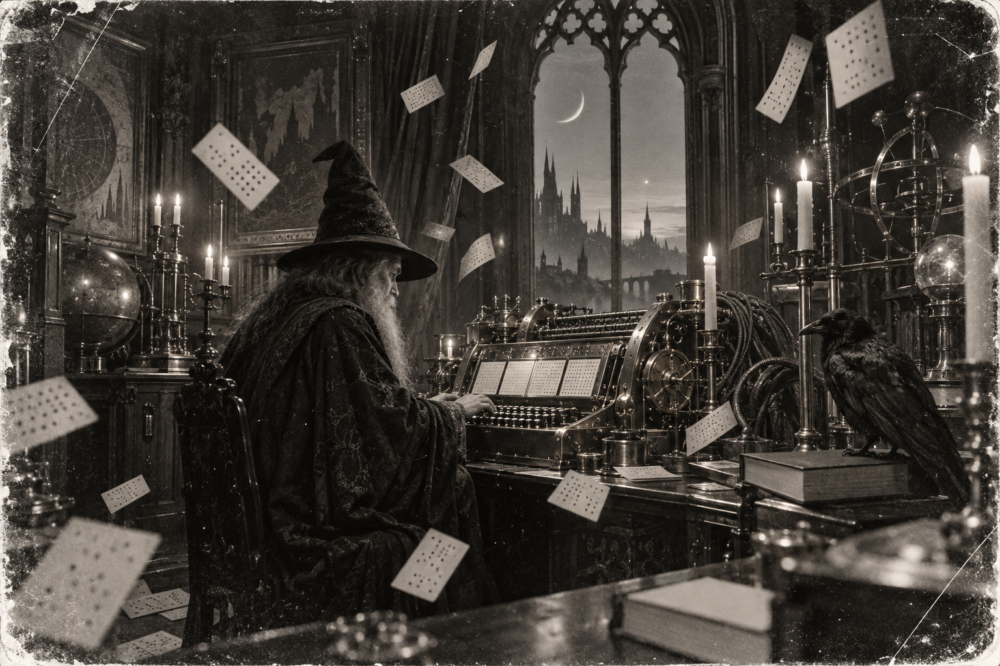

Morning Edition
6:00 AM CDTFinance & Markets
The Tape
The cash desk has not opened. It is 6 a.m. CDT. Do not call a futures print a close. Yahoo's last daily bars are still Friday: the Dow at 51,654.95, the S&P 500 at 7,811.54, the Nasdaq Composite at 27,366.17. The 10-year print on this feed is still Friday's 5.244 percent. This morning's futures tape, about 5:52 a.m. CDT: E-mini S&P 7,864.75, Dow futures 51,968, Nasdaq-100 futures 31,070. AP, in its Monday wrap, said U.S. stock futures edged 0.2 percent higher after a record-setting week, and that this week brings inflation, retail sales, and earnings from the biggest U.S. banks. Two tapes. Do not average them. Federal offices are closed for Columbus Day and Indigenous Peoples' Day. That is not, on this page, a claim that the exchange is shut. No fresh private-equity print was verified on this desk. A missing number is not a round number. Read the bars. Then leave the chart closed until the open.
Source: Yahoo Finance chart feed, read October 12, 2026; AP; SpacePolicyOnlineThe Barrel
Same futures feed, same 5:52 a.m. CDT print. Brent $105.76. WTI $92.82. Gold $4,201.90. Friday's bars on this desk were Brent $104.72, WTI $91.85, gold $4,216.30. That is a morning print against a Friday bar, not a thesis. AP said Brent steadied above $104 after President Trump's plan to buy Russian diesel drew criticism from some lawmakers. CoinDesk, updated 6:41 a.m. EDT, had WTI back at $92.63 after an early dip under $90, and tied the earlier drop to Trump's Friday announcement of 300,000 metric tons of Russian diesel. Three numbers. Do not weld them into one barrel. A kitchen is not a pump.
Source: Yahoo Finance futures; AP; CoinDesk, October 12, 2026The Prize
AP from Stockholm: American-born economists Robert E. Hall and Michael Woodford won the Nobel memorial prize in economics this morning, for models that have helped governments and central banks manage shocks such as energy crises and inflation. Hall is at Stanford. Woodford is at Columbia. The Royal Swedish Academy of Sciences said the laureates have helped smooth the economy's peaks and troughs. A prize is not a forecast. The same AP wrap had Europe higher and Seoul lower: the DAX up 0.5 percent to 25,213.52, the CAC 40 up 0.3 percent to 7,826.70, the FTSE 100 up 0.5 percent to 10,602.21, and the Kospi down 3.7 percent to 6,384.24. Those are AP's prints, not this desk's. Read the page. Then do not trade a medal.
Source: AP, October 12, 2026World & US
The Pause
AP: President Zelensky, speaking Monday at the Warsaw Security Forum, said Russia has kept striking Ukraine's energy facilities after President Trump said a day earlier that the two sides had agreed an energy ceasefire. Zelensky said Ukraine learned of the claim through media reports, and that he would honor a mutual pause if Moscow did. "We support it, but I have not heard approval of this proposal from the Russian side," he said. CoinDesk, on the oil story, says Ukrainian officials were not consulted and that strikes on the grid have continued. A claim on a weekend is not a switch. Read the quote. Then leave the war off the kitchen table.
Source: AP; CoinDesk, October 12, 2026The Terminal
AP from Cairo: a projectile struck a passenger terminal at King Khalid International Airport in Riyadh on Sunday, a day after a missile hit the same terminal and killed 12 people. The Saudi-led coalition said so. The Houthis claimed those attacks and others. Saudi authorities said one person, described as a Pakistani national, was killed in the latest strike, and 11 were injured. The airport has been closed since Saturday's attack, which AP calls the deadliest in a Gulf Arab nation since the Iran war began. The airport, the page says, has been struck four times in five days. Separate item, do not add it: Houthis reported airstrikes on two districts in Sanaa around midnight and blamed Saudi Arabia, which had not immediately responded. A Houthi-run Health Ministry spokesman, Anees al-Asbahi, said the capital strikes killed one person and wounded 12; he also said a salt-factory strike in Hamadan killed a man and wounded eight. Those are two sentences. Do not add them. India's Foreign Ministry said two Indian nationals were missing after a drone struck a commercial tanker around the Strait of Hormuz. A morning wire is not a final count.
Source: AP, October 12, 2026The Coast
AP: people in the Florida Panhandle and southern Alabama were cleaning up after Hurricane Isaias, and the remnant was flooding rivers in western North Carolina on Sunday. The National Weather Service, as cited, warned of flash and urban flooding there, possible tornadoes in parts of Virginia and North Carolina, and dangerous surf along the Gulf and southeastern Atlantic coasts. Rachel, now a former tropical storm, was battering Southern California with Pacific waves. Hurricane Simon was still a Category 3 late Sunday, maximum sustained winds 115 mph, eye just offshore and closing on the Puerto Vallarta area, with the worst of it expected from around midnight through Monday morning. This desk, via wttr.in: Chicago is cloudy and 67°F. That is the room. It is not the Gulf, not the Pacific, not the Appalachians. A Sunday river is not this morning's river. Read the wire. Then leave the coast where it is.
Source: AP; wttr.in, October 12, 2026
The Monday Wizard: one step, then the raven. A crescent in the window.
"The win is real. It does not need to be rushed."- The Developer's Almanac
Sagittarius Horoscope
Justin, DailyOm says Jupiter, your ruler, is making room. Ambition and optimism are working together, and people in charge can feel it. Something you have been building toward gets a real green light, especially around the work and the name on it. Say yes. Then let the work speak. The catch is heat. You want the answer now, the merge now, the whole roadmap now. A friend, or an old feeling, can turn a clean review into a clash. Notice the urge to force it, then ease off. Pick the one goal. Take one concrete step: the note, the ask, the commit. Then stop before you overcommit. Steady still ships. Their sky note: the Sun in Libra sextile Jupiter, the Sun also opposing Saturn, a Scorpio Moon square Mars. The Moon is a waxing crescent, 6 percent lit. Aquarius is the compatible sign if you want a cool read on a hot decision. The Rat-year gift is the pause between the yes and the second yes. Lucky command: git commit -m "one step" && exit.
Tech, AI, Space & Crypto
-
The Harness
Not a Monday post. Read it as the brake from Saturday, given a name. The Windows Developer Blog, at its October 7 path: Microsoft Execution Containers are now generally available. An agent cannot be its own security authority. It has to run inside a boundary the developer or the organization defines, enforced outside the model. Their example is a coding agent asked to update a website. It may read and write the repository. It may read the production server configuration. It must not be able to change that configuration, even if the model decides that would be the fastest path. Containment is the point. Identity and manageability are named beside it. Entra distinguishing agent activity from a person is still "soon" on the page, not shipped in this sentence. A blog post is not a switch on your machine. Read it. Then know where your own harness is.
Source: Windows Developer Blog, October 7, 2026 -
The Elongation
Astronomy, published this morning: Mercury reaches greatest eastern elongation at 6 a.m. EDT, 25 degrees from the Sun. The Moon passes 2 degrees south of Mercury at 4 p.m. EDT. Both are in Libra. By evening the crescent sits to the lower left of the planet, magnitude 0.0, only 4.5 degrees high 20 minutes after sunset, about 3.5 degrees to the upper right of a waxing crescent now 6 percent lit. Do not lift binoculars until the Sun is down. Through a telescope Mercury spans 7 arcseconds and appears 60 percent lit. It sets shortly after 7 p.m. local daylight time. Sunrise 7:08 a.m. Sunset 6:25 p.m. Moonrise 9:20 a.m. Moonset 7:08 p.m. Those clock times are for 40° N, 90° W, not a Chicago certificate. The other appointment is not in the sky. SpacePolicyOnline: federal offices are closed today. SpX-35, the next Cargo Dragon, is on this week's list, carrying the last set of roll-out solar arrays. Six are already up. A calendar line is not a liftoff.
Source: Astronomy; SpacePolicyOnline, October 12, 2026 -
The Print
Coinbase spot, this desk, this morning: Bitcoin $83,419.39. Ether $2,554.06. Yesterday morning's print here was $82,927.12 and $2,498.83. That is about 0.6 percent higher, and about 2.2 percent higher. CoinDesk, as of 10:30 UTC, had Bitcoin near $83,400 after a high around $84,250, and said U.S. spot bitcoin ETFs saw $681 million in outflows last week, the largest since June. Analysts on the page named $82,000 as support and pointed to U.S. inflation data on October 14. A Monday spot is not a thesis. Inherit the print. Then close the chart.
Source: Coinbase spot; CoinDesk, October 12, 2026
Morning Compile
- Cash desk not open. Friday bars still stand: Dow 51,654.95, S&P 7,811.54, Nasdaq 27,366.17. 10-year 5.244%.
- Futures, about 5:52 a.m. CDT: ES 7,864.75, YM 51,968, NQ 31,070. AP says futures edged 0.2%. Do not average the tapes.
- Same print: Brent $105.76, WTI $92.82, gold $4,201.90. AP has Brent above $104. CoinDesk had WTI at $92.63. Three barrels.
- Hall and Woodford, Nobel memorial prize in economics. A medal is not a trade.
- Zelensky: he would honor an energy pause if Moscow did. He has not heard that approval. Do not run the war from a kitchen.
- Riyadh: Saturday's missile killed 12. Sunday's strike killed 1 and injured 11. Sanaa's counts are separate. Do not add them.
- Isaias is inland. Rachel is on the California coast. Simon is still a hurricane off Mexico. Chicago is cloudy and 67°F.
- MXC is the harness, dated October 7, not this morning. An agent cannot be its own security authority.
- Mercury at greatest elongation tonight. Waxing crescent, 6 percent. SpX-35 is on the week list, not a liftoff. Bitcoin $83,419.39.
- One step. Then stop. Then breakfast.